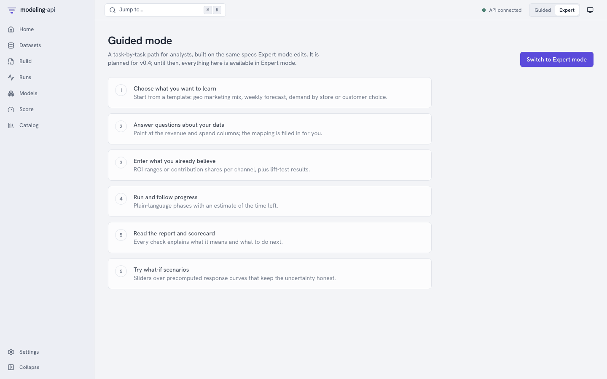

The Expert web app v0.2¶
The web app is the Expert-mode front end of the platform: data scientists upload data, write
and validate specs, fit them, inspect the fitted models and score them, all against the same
/v1 HTTP API that the CLI and the Python client use. Nothing the app does is
privileged: every button is one or two API calls.
This page walks through every page in navigation order. The screenshots come from the
quickstart stack; make dev serves the app at
http://127.0.0.1:5173.
Guided mode arrives in v0.4
The Guided / Expert switch in the header already exists, but Guided mode is a preview
of the task flow that analysts will get in v0.4. Both modes edit
the same ModelSpec.
The shell¶
| Element | What it does |
|---|---|
| Sidebar | Home, Datasets, Build, Runs, Models, Score and Catalog; Settings at the bottom. Collapse (Cmd+B) narrows it to icons. |
| Jump to… (Cmd+K or /) | A command palette: go to any page, start a new spec, switch the theme, or paste an id (run_…, mdl_…, ds_…, spc_…) to open it. |
| API connected | Polls GET /readyz: green when PostgreSQL, the object store and the catalog are ready, amber (API degraded) or red (API unreachable) otherwise. It links to Settings, which shows each check. |
| Guided / Expert | The persona switch (remembered in this browser). |
| Display icon | Light, dark or system theme. |
| ? | The keyboard shortcuts. Single keys work when no text field has focus: G then H Home, D Datasets, B Build, R Runs, M Models, S Score, C Catalog, , Settings. |
Text that came from a run or a plugin (log lines, tracebacks, warning messages, plot captions) is always rendered as plain text, with ANSI escapes and control and bidi characters removed. It is labelled untrusted output where it appears.
Home¶

The landing page answers "is anything happening, and does anything need me?":
- Running (the heading says Nothing running when idle): active runs with their live progress bars;
- Needs attention: failed, stalled or partial runs among the latest 50, each linking to its run page;
- Recently finished: the latest runs of every kind with their state and input;
- Models: registered models with their latest version;
- Start something: write a spec from the geo MMM template, upload a dataset, browse the catalog. Upload data and New spec do the same from the header.
Datasets¶

A dataset is a named collection of immutable versions. New dataset asks for a name
(lowercase letters, digits, _ and -) and an optional description, then opens the upload panel.
Uploading. Pick a file:
- a zarr zip (
.zarr.zip) or netCDF (.nc) file is self-describing: its dims, coordinates and, if present, itsmapi_schemaattribute (roles, policies, units) are used as they are; - a CSV file is previewed in your browser (it is never parsed by the server) and you
map each column: a dim with its kind (
time,categorical, …), its score-time policy (fixed,extend,new_levels) and frequency, or a variable with its role (target,spend,covariate, …), units and missing-value rule. Parquet files are mapped the same way, without the local preview.
Upload and ingest sends the file straight to object storage through a signed PUT URL (the
API never sees the bytes), then starts a sandboxed ingest run. The page refreshes until the
version is ready, or shows the ingest's issues in plain language ("3 markets are missing
2 weeks in March").

A version page has five tabs:
| Tab | Shows |
|---|---|
| Schema | Dims with kind, score-time policy, frequency and new-level strategy; variables with dims, dtype, role, units and missing-value rule |
| Coordinates | Each dim's coordinate range and values, searchable when there are many |
| Missingness | A heatmap of missing values per variable along the time dim, rendered in the plot sandbox |
| Preview | The first rows, as the ingest run wrote them (preview.json) |
| About | The content hash, size, the ingest run, when it was created and the version message |
dataset://default/eu_media_daily@v1 (the copy button next to the title) is the reference
that specs and score requests use. @latest resolves to the newest ready version when a run
is submitted, and the run records which one it got.
Build¶
Build lists the specs with their latest revision and whether it is valid. New spec opens the editor on the geo MMM template.

The editor is Monaco with YAML support bound to the server's modelspec.json schema,
so it completes keys and documents fields on hover. As you type (and on Cmd+Enter) the
spec is sent to POST /v1/specs:validate: the server resolves every dataset:// reference,
step and model plugin, checks the settings against the plugin's sanitized JSON Schema, and
propagates the data schema through the pipeline using each step's exported schema effect.
Problems appear as squiggles at the exact YAML path and in the Issues tab, with their
error code (LEAKAGE_RISK, SCHEMA_INVALID, …). The badge under the title says valid or
how many errors there are.
The right-hand panel:
| Tab | Shows |
|---|---|
| Pipeline | The raw data after binding, then one card per step: its plugin and version, what kind of step it is (reshape, value, feature), whether it learns state and is invertible, the dims it adds or changes, the context tail it keeps for scoring, and Schema after this step. The Train / holdout split marker sits where data.split.after_step puts it. |
| Issues | Every validation issue with its code, JSON pointer and message |
| Revisions | Every saved revision, with its message; pick two to see a diff |
The buttons:
- Save revision (Cmd+S) stores the text as a new immutable revision (
r1,r2, …) with the optional message. Invalid revisions can be saved too, so work in progress is never lost; they cannot be fitted. - Dry-run starts a sandboxed
validaterun of the saved revision: it checks the real data array by array against the spec, fits the pipeline on it (not the model) and records the schema at every stage. Use it when a step's effect is dynamic, or when the static check passes and you want to know the data really fits. - Fit submits a fit run of the saved revision and opens its run page.
Runs¶

Every ingest, describe, dry-run, fit and score is a run. The list filters by state and kind and updates live.
Run detail¶

The run page subscribes to the run's server-sent event stream (Live next to the state) and
resumes where it stopped after a disconnect.
- Progress: the current phase (Starting the sandbox, Loading inputs, Fitting,
Rendering plots, Uploading outputs, …), the latest message from the runner (for a
PyMC fit, the chain, draw and divergence counts) and a progress bar. No progress reported
recently appears when a run goes quiet for longer than expected; the run is marked
stalled, which is a warning, not a failure: the executor's own status decides whether the run is alive. - Logs: the stdout and stderr the supervisor captured from the worker (capped and stripped), with All / stdout / stderr / system filters, a text filter and Follow.
- Details: timestamps, the spec revision, model version or dataset it ran on, the spec
hash, the run it retried, and its cost (
Not metered locally). - Events: every persisted event, including the
DEV_MODE_ISOLATIONwarning on a laptop, diagnostics and metrics.
Actions: Cancel (any active run; checkpointed fits stop as partial), Resume (a
partial run continues from its checkpoints as a new attempt) and Retry (a new run from
a failed one; after RESOURCE_EXHAUSTED the dialog suggests the next resource class). A
succeeded fit links to its model version: Inspect model://default/eu-geo-mmm@v1.
Models¶
Models lists every model (one per spec name) and the model page lists its versions. Each successful fit registers a new version after the platform has verified the run's outputs and signed the bundle manifest. The version page has six tabs and a Score button.
Overview¶

The Scorecard rolls the diagnostics up into pass, warn and fail items, each with a
plain-language message, the metric and its threshold, and a suggested action. Metrics are
the holdout metrics the spec asked for (evaluate.metrics), computed by scoring the holdout
through the normal scoring path before the refit. Capabilities are the plugin's: score
modes, representation (draws, quantiles, interval, point, moments), how
contributions combine, what preprocessing the model owns, and whether results are
deterministic for a seed.
Diagnostics¶

One row per check and variable, sortable and filterable: R-hat, bulk and tail ESS, divergences, Pareto k, or "LOO invalid" with the plugin's reason.
Plots¶

The plot recipes the spec listed in outputs.plots, rendered from the bundle's precomputed
plot data. Each card says which recipe made it (core.ppc_fan@1.0.0) and in which library
(vega-lite or plotly), with a plain-language caption.
Every plot, first-party included, renders inside an <iframe sandbox="allow-scripts"> served
from the plot sandbox's own origin (port 5174 locally). The specs were checked by the server's
sanitizer when the run finished and again on every read, and the sandbox refuses URL data,
links, external images and tile maps before any charting library runs. The two windows talk
only through a small, validated postMessage protocol. See
Web app and plot sandbox.
Data tree¶

A browser over the bundle's ui/tree_index.json: every group of the fitted bundle
(binding, fit_coords per stage, model/posterior, sample_stats, log_likelihood,
preprocess/<step>/{arrays,context}, derived/…) with its variables, dims, shapes, units
and attributes. It reads the index only; the arrays stay in the bundle, which you can
download from Provenance or with the client.
Preprocessing¶
A heatmap of each step's learned state (for example scale(geo, channel)), read from the
bundle's ui/preprocess.json view: every step in order with its resolved plugin, whether it
is stateful, its learned JSON and its numeric state arrays (larger arrays are listed as
omitted). The full state is also browsable under preprocess/ in Data tree.
Provenance¶

- Signature: the bundle manifest's signature (EC P-256 locally, standing in for Cloud KMS), the spec, data and catalog hashes it binds, and its status. The server checks it, the tenant and every object generation before it hands out any download link.
- Lineage: the fit run and attempt, plugin and version, engine and seed, executor and resource class, dataset and side-table versions, the evaluation bundle it was refitted from, and the library versions in the runner.
- Bundle objects: every stored object with its size, CRC32C and generation; each can be opened or downloaded through a short-lived signed URL, and the download is checked against that CRC32C.
Score¶

Pick a model and version (or arrive from a model page). The form is built from the model's capabilities, so it only offers what the model can do, and the server checks the request statically before any run starts.
| Field | Meaning |
|---|---|
| Mode | predict, forecast, counterfactual, simulate, evaluate (and filter for state-space models), as the plugin declares |
| Horizon dim, Periods | For forecast: how far to extend the time-like dim past the fitted range |
| Inputs enter at stage | Where the request's data enters the pipeline: raw (the dataset's own units), or a later stage such as weekly, to send weekly EUR spend directly. Steps before the stage are skipped, and so are their side tables. |
| Input data | A dataset:// reference (Upload creates one): future spend for a forecast, a new market, or a window of past data for a counterfactual |
| Scenario data | A changed copy of the input data; counterfactuals compare it with the input |
| Side tables | Tables with score_policy: supplied (here fx) default to the version the fit used and must cover the scored dates; pinned tables are replayed from the fit |
| Interventions | Change a variable on selected coordinates: spend_local where channel=tv, multiply by 1.2 |
| Quantity | Expected (the mean response) or Predictive (with observation noise) |
| Units, Names | Original units (inverted back through the pipeline) or model space; your dataset's names or the plugin's canonical names |
| Summaries, Draws | Which summaries to return (mean, median, sd, hdi_50, hdi_90, quantiles), and how many joint draws (0 returns summaries only; counterfactual deltas need draws to show their uncertainty) |
| Variables, Seed | Restrict the outputs; fix the seed for reproducible draws |
Score sends POST /v1/models/{id}/versions/{v}:score with Prefer: wait=30 and an
idempotency key, then follows the run.

Results shows the run's own plots (a forecast fan per market, or the scenario against the
baseline for a counterfactual), the outputs with their sizes and signed links
(score.zarr.zip is the full xr.DataTree, ui/summary.arrow the summary table), the
summary as a table with one row per coordinate and one column per statistic, and a quick
chart you can re-plot by any column. A market the model has not seen, like FR above, is drawn
from the fitted hierarchy, so its band is wider; the result's issues say so.
Catalog¶

What the runner image provides, as exported by its sandboxed describe run and identified by its digest: Models (inference, representation, score modes, base image), Steps (kind, whether it learns state, invertibility, summary) and Plots (recipe, title, audience and the bundle groups it needs). Click a row for its full entry. Specs can only use what is listed here. The same data is in the generated catalogs.
Settings¶

Appearance and Mode are stored in this browser. Connection shows the API and plot
sandbox the app was built for (VITE_API_BASE, VITE_PLOTS_ORIGIN), the server and contract
versions, and the latency of each readiness check.
Guided¶

The six tasks an analyst will follow in v0.4: choose a template, answer questions about the data, enter beliefs as ROI ranges, run, read the report and scorecard, try what-if scenarios. Today the page explains them and links back to Expert mode.
Where next¶
- Your first model in the web app: the E33 demo clicked through from upload to counterfactual.
- Web app and plot sandbox: build variables, the API client and the security headers.
- Security model: what the sandbox and the plot iframe protect against, locally and in production.